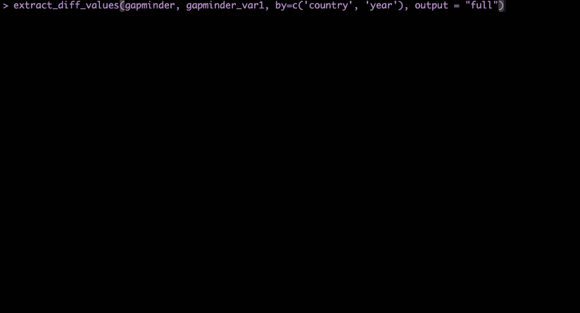

This article looks at a series of workflows for the function
extract_diff_values() and its companion
extract_diff_table().
Introduction
At its core, both functions do the following:
- Set up the two data frames (
dfxanddfy) for comparison:- Pair rows based on the keys provided (given by the user using the
by,by.x,by.yarguments, or by row number). - Pair columns based on the column names.
- Pair rows based on the keys provided (given by the user using the
- Run the comparison between shared rows and shared columns only.
- Then depending on the function:
-
extract_diff_values(): returns a list ofdata.tables, one per variable, with the values of a given variable indfxanddfyside-by-side. -
extract_diff_table(): returns adata.tablewith all differences in values betweendfxanddfy.
-
In this article, we will first cover how
extract_diff_values() work with a simple and then a more
complex type of data set. Then, we will look at how
extract_diff_table() can add value to the comparison.
⚠️ No keys provided
Right now, myrror does not align rows based on row
content. This means that if the user does not provide keys, the function
will compare the two datasets based on row number only. This can lead to
incorrect results (extract_diff_values() will not return
the correct rows) if:
the datasets have different row orders.
a detaset have duplicate rows.
a dataset has new/missing rows.
Therefore, we suggest the user to always provide keys when running this and the other functions.
Example 1: one variable with differences.
If you run the functions with arguments output = "full"
the console will print a user-friendly summary of the comparison,
similar to the output of myrror(), but displaying only the
output of extract_diff_values().

When run in default mode, with output = "simple" ,
extract_diff_values() returns a list of
data.tables:
output <- extract_diff_values(survey_data, survey_data_2, by=c('country', 'year'), output = "simple")
print(output)
#> $variable2
#> diff indexes country year variable2.x variable2.y
#> <char> <char> <char> <int> <num> <num>
#> 1: change_in_value 1 A 2010 0.4978505 -1.07179123
#> 2: change_in_value 2 A 2011 -1.9666172 0.30352864
#> 3: change_in_value 3 A 2012 0.7013559 0.44820978
#> 4: change_in_value 4 A 2013 -0.4727914 0.05300423
#> 5: change_in_value 5 A 2014 -1.0678237 0.92226747
#> 6: change_in_value 6 A 2015 -0.2179749 2.05008469
#> 7: change_in_value 7 A 2016 -1.0260044 -0.49103117
#> 8: change_in_value 8 A 2017 -0.7288912 -2.30916888
#> 9: change_in_value 9 B 2010 -0.6250393 1.00573852
#> 10: change_in_value 10 B 2011 -1.6866933 -0.70920076
#> 11: change_in_value 11 B 2012 0.8377870 -0.68800862
#> 12: change_in_value 12 B 2013 0.1533731 1.02557137
#> 13: change_in_value 13 B 2014 -1.1381369 -0.28477301
#> 14: change_in_value 14 B 2015 1.2538149 -1.22071771
#> 15: change_in_value 15 B 2016 0.4264642 0.18130348
#> 16: change_in_value 16 B 2017 -0.2950715 -0.13889136In this comparison, survey_data and
survey_data_2 are two data frames that differ in the values
of the variable2 column. The output shows the values of the
variable variable2 in survey_data (dfx) as
variable2.x and in survey_data_2 (dfy) as
variable2.y. The column diff identifies the
type of differences between the two values. In this case, in
survey_data, the non-matching observations have different
values. Therefore, the column diff shows
change_in_value.
This output can be manipulated by the user to explore the differences in more detail.
Example 2: multiple variables with differences.
Here is a case where the two data frames differ in multiple variables:
survey_data_2$variable2[c(1,2,3,4)] <- NA
survey_data_2$variable3 <- NA
output <- extract_diff_values(survey_data, survey_data_2, by=c('country', 'year'), output = "simple")
str(output, max.level = 1)
#> List of 2
#> $ variable2:Classes 'data.table' and 'data.frame': 16 obs. of 6 variables:
#> ..- attr(*, ".internal.selfref")=<externalptr>
#> $ variable3:Classes 'data.table' and 'data.frame': 16 obs. of 6 variables:
#> ..- attr(*, ".internal.selfref")=<externalptr>This time, the object returned is a list of data.tables,
one for each variable that differs between the two data frames. If we
look into one single variable, we can see that there are also different
types of differences, in this case value_to_na and
change_in_value:
output$variable2 |>
group_by(diff)|>
count()
#> # A tibble: 2 × 2
#> # Groups: diff [2]
#> diff n
#> <chr> <int>
#> 1 change_in_value 12
#> 2 value_to_na 4Let’s assume that I want to focus on missing values in the variable
variable2:
output$variable2 |>
filter(diff == "value_to_na")
#> diff indexes country year variable2.x variable2.y
#> <char> <char> <char> <int> <num> <num>
#> 1: value_to_na 1 A 2010 0.4978505 NA
#> 2: value_to_na 2 A 2011 -1.9666172 NA
#> 3: value_to_na 3 A 2012 0.7013559 NA
#> 4: value_to_na 4 A 2013 -0.4727914 NAThe user can use the indexes to extract the observations in
dfy:
indexes <- output$variable2 |>
filter(diff == "value_to_na") |>
select(indexes)|>
mutate(indexes = as.numeric(indexes))
survey_data_2[c(indexes$indexes), ]
#> country year variable1 variable2 variable3 variable4
#> <char> <int> <num> <num> <num> <num>
#> 1: A 2010 -0.56047565 NA NA 0.77996512
#> 2: A 2011 -0.23017749 NA NA -0.08336907
#> 3: A 2012 1.55870831 NA NA 0.25331851
#> 4: A 2013 0.07050839 NA NA -0.02854676Example 3: a larger dataset
In this example we will look at a more complex case, using the
publicly available gapminder dataset. We will compare the
gapminder dataset with a modified version of it,
gapminder_var1:
gapminder_var1 <- gapminder |>
mutate(lifeExp = ifelse(year == 2007, NA, lifeExp), # NAs in lifeExp for one year
pop = ifelse(country == 'Italy'& year >= 1992, pop + runif(1,1, 10), pop), # Errors in pop
gdpPercap = ifelse(country == 'Colombia', gdpPercap/10, gdpPercap)) # Errors in gdpPercapIf we run extract_diff_values() with the
output = "full" and interactive = TRUE
arguments, we will get a full report of the comparison. Note that this
time, the two data sets are compared using the unique identifiers
country and year, which will be displayed next
to the indexes in the extracted rows:
 Alternatively,
if we run the function with output = "simple" we will get a
list of data.tables, one per variable that differs between
the two data frames:
output <- extract_diff_values(gapminder, gapminder_var1, by=c('country', 'year'), output = "simple")
str(output, max.level = 2)
#> List of 3
#> $ lifeExp :Classes 'data.table' and 'data.frame': 142 obs. of 6 variables:
#> ..$ diff : chr [1:142] "value_to_na" "value_to_na" "value_to_na" "value_to_na" ...
#> ..$ indexes : chr [1:142] "12" "24" "36" "48" ...
#> ..$ country : chr [1:142] "Afghanistan" "Albania" "Algeria" "Angola" ...
#> ..$ year : int [1:142] 2007 2007 2007 2007 2007 2007 2007 2007 2007 2007 ...
#> ..$ lifeExp.x: num [1:142] 43.8 76.4 72.3 42.7 75.3 ...
#> ..$ lifeExp.y: num [1:142] NA NA NA NA NA NA NA NA NA NA ...
#> ..- attr(*, ".internal.selfref")=<externalptr>
#> $ pop :Classes 'data.table' and 'data.frame': 4 obs. of 6 variables:
#> ..$ diff : chr [1:4] "change_in_value" "change_in_value" "change_in_value" "change_in_value"
#> ..$ indexes: chr [1:4] "777" "778" "779" "780"
#> ..$ country: chr [1:4] "Italy" "Italy" "Italy" "Italy"
#> ..$ year : int [1:4] 1992 1997 2002 2007
#> ..$ pop.x : int [1:4] 56840847 57479469 57926999 58147733
#> ..$ pop.y : num [1:4] 56840849 57479471 57927001 58147735
#> ..- attr(*, ".internal.selfref")=<externalptr>
#> $ gdpPercap:Classes 'data.table' and 'data.frame': 12 obs. of 6 variables:
#> ..$ diff : chr [1:12] "change_in_value" "change_in_value" "change_in_value" "change_in_value" ...
#> ..$ indexes : chr [1:12] "301" "302" "303" "304" ...
#> ..$ country : chr [1:12] "Colombia" "Colombia" "Colombia" "Colombia" ...
#> ..$ year : int [1:12] 1952 1957 1962 1967 1972 1977 1982 1987 1992 1997 ...
#> ..$ gdpPercap.x: num [1:12] 2144 2324 2492 2679 3265 ...
#> ..$ gdpPercap.y: num [1:12] 214 232 249 268 326 ...
#> ..- attr(*, ".internal.selfref")=<externalptr>From printing the structure of the output, we can see that there are
differences in 3 variables: lifeExp, pop, and
gdpPercap. The user can explore the differences in more
detail by looking at each variable:
lifeExp has differences in the values only for the year
2007, where all values are NAs:
output$lifeExp |>
group_by(diff, year)|>
count()
#> # A tibble: 1 × 3
#> # Groups: diff, year [1]
#> diff year n
#> <chr> <int> <int>
#> 1 value_to_na 2007 142pop has differences in the values for the country
Italy and years after 1992, and the difference is a fixed
value:
output$pop |>
group_by(diff, country, year)|>
count()
#> # A tibble: 4 × 4
#> # Groups: diff, country, year [4]
#> diff country year n
#> <chr> <chr> <int> <int>
#> 1 change_in_value Italy 1992 1
#> 2 change_in_value Italy 1997 1
#> 3 change_in_value Italy 2002 1
#> 4 change_in_value Italy 2007 1
output$pop |>
mutate(pop_diff = pop.x - pop.y) |>
select(country, year, pop_diff)
#> country year pop_diff
#> <char> <int> <num>
#> 1: Italy 1992 -1.726751
#> 2: Italy 1997 -1.726751
#> 3: Italy 2002 -1.726751
#> 4: Italy 2007 -1.726751Finally, gdpPercap has differences in magnitude (10) for
Colombia. Differences are for all available years, from
1952 to 2007:
output$gdpPercap |>
group_by(diff, country) |>
count()
#> # A tibble: 1 × 3
#> # Groups: diff, country [1]
#> diff country n
#> <chr> <chr> <int>
#> 1 change_in_value Colombia 12
output$gdpPercap |>
mutate(gdpPercap_ratio = gdpPercap.x/gdpPercap.y)|>
select(country, year, gdpPercap_ratio)|>
head()
#> country year gdpPercap_ratio
#> <char> <int> <num>
#> 1: Colombia 1952 10
#> 2: Colombia 1957 10
#> 3: Colombia 1962 10
#> 4: Colombia 1967 10
#> 5: Colombia 1972 10
#> 6: Colombia 1977 10Extracting the differences in a table format
The function extract_diff_table() can be used to extract
the differences in a table format. This function is useful when the user
wants to see all differences in values between all variables. The output
is a data.table with all rows (observations) that have at
least one difference in a variable. If a row has differences in multiple
variables, it will be displayed multiple times, one per difference.
extract_diff_table(gapminder, gapminder_var1, by=c('country', 'year')) |>
datatable(
filter = 'top',
rownames = FALSE,
style = 'auto',
options = list(
searching = FALSE,
paging = TRUE,
scrollX = TRUE,
autoWidth = TRUE,
pageLength = 5
)
)The user can then filter the table to focus on specific differences, aggregate and summarize the table to understand general patterns, or use the indexes to extract the rows from the original data frame.
For example:
extract_diff_table(gapminder, gapminder_var1, by=c('country', 'year')) |>
group_by(diff, country) |>
count()
#> # A tibble: 144 × 3
#> # Groups: diff, country [144]
#> diff country n
#> <chr> <chr> <int>
#> 1 change_in_value Colombia 12
#> 2 change_in_value Italy 4
#> 3 value_to_na Afghanistan 1
#> 4 value_to_na Albania 1
#> 5 value_to_na Algeria 1
#> 6 value_to_na Angola 1
#> 7 value_to_na Argentina 1
#> 8 value_to_na Australia 1
#> 9 value_to_na Austria 1
#> 10 value_to_na Bahrain 1
#> # ℹ 134 more rowsConclusion
As a recap:
extract_diff_values()/extract_diff_table()is a function that allows the user to extract the differences in values between two data frames in list/data.table format.It can be run with
output = "full"to get a full report of the differences. Interactivity can be switched off by settinginteractive = FALSE.It can be run with
output = "simple"to get a list ofdata.tables, one per variable that differs between the two data frames.